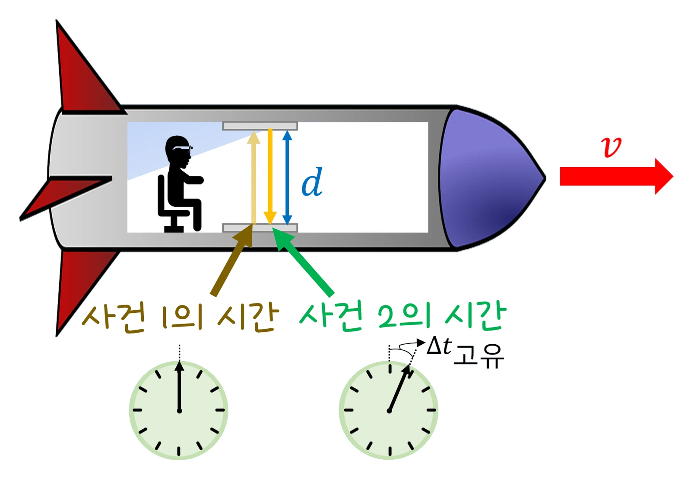
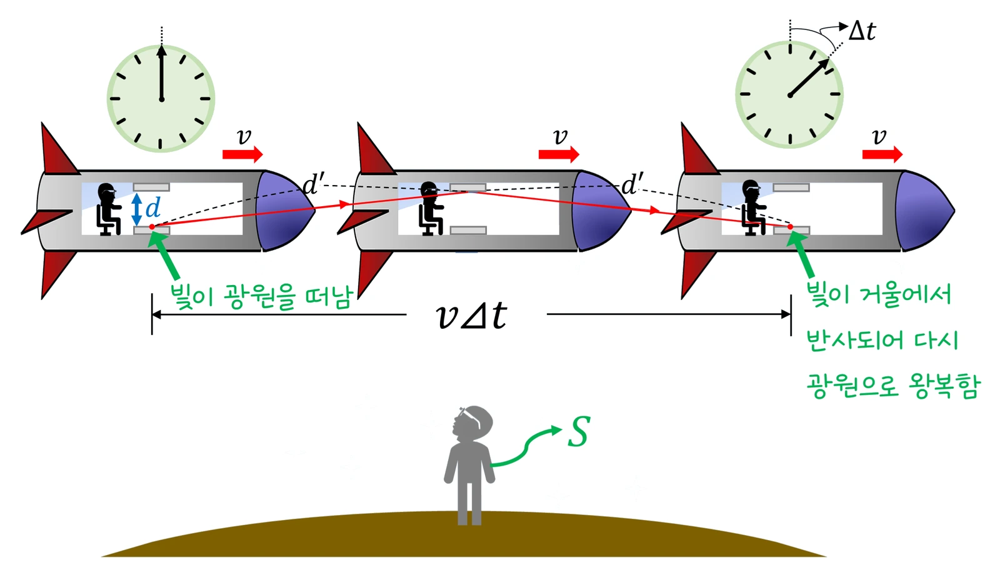

고2 물리학 · Ⅲ 빛과 물질 · 웹툰 18화 「우주선의 시계」
실험에서 우주선 속력 β = v/c(0.1~0.99)와 관찰 위치(지상 / 우주선 안)를 바꿔 가며 빛 시계의 똑딱 비와 정지 길이 100 m 우주선의 측정 길이를 기록했습니다. 빠를수록 움직이는 시계는 느리고 길이는 짧게 재졌으며, 어느 쪽에서 보든 상대방이 느리고 짧다고 보는 완전한 대칭이었습니다. 특수 상대성 이론의 현상과 증거를 정리합니다.
실험 데이터 되짚기
정지 길이 L₀ = 100 m. 화면의 움직임은 느리게 표현했습니다.
| β = v/c | 0.1 | 0.5 | 0.8 | 0.9 | 0.99 |
|---|---|---|---|---|---|
| γ | 1.005 | 1.155 | 1.667 | 2.29 | 7.09 |
| 지상에서 본 우주선 길이 L₀/γ | 99.5 m | 86.6 m | 60 m | 43.6 m | 14.1 m |
| 우주선 시계 10똑딱 동안 지상 시계 | 10.05 | 11.5 | 16.7 | 22.9 | 70.9 |
| 우주선에서 본 역의 길이 | 99.5 m | 86.6 m | 60 m | 43.6 m | 14.1 m (대칭) |
두 시계 모두 빛은 같은 속력 c로 움직입니다. 어느 쪽이 ‘진짜’가 아니라 서로 상대방의 시계가 느리고 길이가 짧다고 보며 둘 다 옳습니다. 일상 속력(1,000 km/h)에서는 γ − 1 ≈ 4 × 10⁻¹³이라 느낄 수 없습니다.
특수 상대성 이론의 두 가정: ① 모든 관성계에서 물리 법칙이 같다, ② 빛의 속력 c는 누가 재도 같다(광속 불변 — 마이컬슨·몰리 실험에서 어느 방향으로 재도 같았음). 빛 시계(거울 사이를 빛이 오가며 똑딱)를 탄 우주선이 속력 v로 지나가면, 정지한 관찰자에게는 빛이 비스듬한 더 긴 경로를 가는데 속력은 같으므로 한 번 똑딱하는 데 시간이 더 걸립니다 → 움직이는 시계는 느리게 갑니다(시간 팽창, Δt = γΔt₀). 같은 이유로 움직이는 물체의 진행 방향 길이는 짧게 재집니다(길이 수축, L = L₀/γ). γ = 1/√(1 − v²/c²)는 v가 c에 가까울수록 커집니다. 빛을 쫓아가도 빛은 여전히 c로 멀어집니다.
교재 그림
같은 빛 시계, 두 관찰자


위: 우주선 안에서는 빛이 거울 사이 d를 곧게 왕복 → 고유 시간 Δt고유. 아래: 지상의 S가 보면 그동안 우주선이 vΔt 움직여 빛은 더 긴 비스듬한 길 d′를 갑니다. 빛의 속력은 같으므로 Δt > Δt고유 — 움직이는 시계가 느리게 갑니다.
움직여 보기
빛 시계 두 개 — 지나가는 우주선의 시계는 왜 느릴까?
두 시계의 빛은 같은 속력 c로 움직입니다. 지상에서 보면 우주선 시계의 빛은 비스듬한 더 긴 길(파란 지그재그)을 가야 하므로 한 번 똑딱하는 데 γ배 오래 걸리고, 우주선의 길이(정지 길이 100 m)도 진행 방향으로 γ배 짧게 잽니다. 화면 속 빛과 우주선은 실제보다 아주 느리게 그렸습니다.
뮤온은 멈춰 있을 때 평균 수명 약 2.2 μs로 빛에 가까운 속력으로 달려도 약 660 m밖에 못 가지만, 수 km 위 대기 상층에서 만들어진 뮤온이 지표에서 아주 많이 검출됩니다. 지구에서 보면 빠르게 달리는 뮤온의 시간이 느리게 가서 더 오래 살아남는 것(시간 팽창)이고, 뮤온 입장에서는 대기의 두께가 짧아져 보이는 것(길이 수축)입니다. GPS 위성 시계는 속력 때문에 하루 약 7 μs 느려지고 약한 중력 때문에(일반 상대성) 약 45 μs 빨라져 합쳐 약 38 μs 차이 — 보정하지 않으면 하루 10 km 넘게 위치가 틀어집니다. 입자 가속기 설계, 질량이 에너지로 바뀐다는 생각(태양의 핵융합, 원자력 발전)까지 상대성 이론은 현대 사회 곳곳에 스며 있습니다.
등속 직선 운동(관성계)만 다룹니다. 가속·감속이 있는 왕복 여행(쌍둥이 역설)은 대칭이 깨져 여행한 쪽이 실제로 덜 늙습니다. 중력에 의한 시간 지연은 일반 상대성 이론의 영역입니다. 길이 수축은 ‘재는’ 결과이고 눈으로 ‘보는’ 모습은 빛의 도달 시간 차 때문에 회전한 듯 보입니다(테렐 회전). 화면은 측정값을 그린 것입니다. 물리학은 눈에 보이는 시소에서 시작해 전기와 자기를 거쳐 원자 속과 빛의 속력까지 — 거시 세계에서 미시 세계로, 우리가 느끼는 범위를 넘어서까지 자연을 이해하는 방법입니다.
β = v/c · 0.5c → γ 1.155 · 0.8c → 1.667 · 0.99c → 7.09 · GPS: −7 μs(속력) + 45 μs(중력) = +38 μs/일
“지구에서 보면 우주선이 옆으로 움직이니까, 빛은 비스듬한 지그재그로 더 긴 길을 가잖아. 그런데 빛의 속력은 누구에게나 같으니까, 한 번 왕복하는 데 시간이 더 걸려. 우주선 시계가 느리게 간다!”
웹툰 18화 · 뭉치: “난 똑같이 간다. 시계는 시계니까.” — 최종 스코어 제로 10 : 8 뭉치
“뮤온은 멈춰 있을 때 평균 수명이 약 2.2 μs인 입자야. 빛에 가까운 속력으로 달려도 그 시간 동안 약 660 m밖에 못 가. 그런데 수 km 위에서 만들어진 뮤온이 지표에서 아주 많이 검출돼.” “뮤온 입장에서는 자기 시간은 그대로인데, 대신 대기의 두께가 짧아져 보이는 거고. 길이 수축!”
웹툰 18화 · 제로: “보정하지 않으면 GPS는 하루에 10 km 넘게 틀리겠네요!”
γ = 1/√(1 − 0.36) = 1.25. 길이 100 ÷ 1.25 = 80 m. 우주선 1시간 = 지상 1시간 15분. 우주선에서 보면 반대로 역이 80 m, 지상 시계가 느립니다.
γ = 7.09 → 수명 2.2 × 7.09 = 15.6 μs, 거리 0.99 × 3 × 10⁸ × 15.6 × 10⁻⁶ ≈ 4.6 km. 660 m가 아니라 수 km를 가서 지표에 도착합니다.